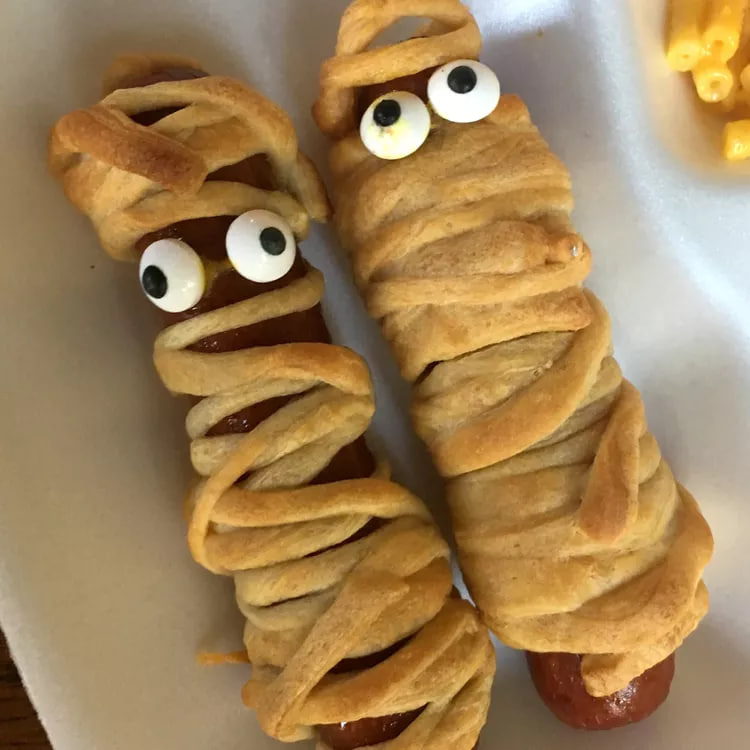

Hotdog mummies

Ingredients
- 8 hot dogs
- 1 (8 ounce) package refrigerated crescent rolls (such as Pillsbury® Grands! Big and Flaky)
- 1 teaspoon yellow mustard, or as needed (Optional)
Directions
- Step 01 -
Preheat oven to 350 degrees F (175 degrees C).
- Step 02 -
Place hot dogs in a saucepan and cover with water; bring to a boil. Reduce heat to medium-low and simmer until warmed through, about 5 minutes. Drain.
- Step 03 -
Roll crescent dough onto a work surface; tear into 8 pieces. Roll 1 piece dough around each hot dog, creating the look of a mummy. Place dots of mustard on the top of each for the eyes, nose, and mouth. Arrange hot dogs on a baking sheet.
- Step 04 -
Bake in the preheated oven until crescent dough is golden brown and flaky, about 10 minutes.
Back to home